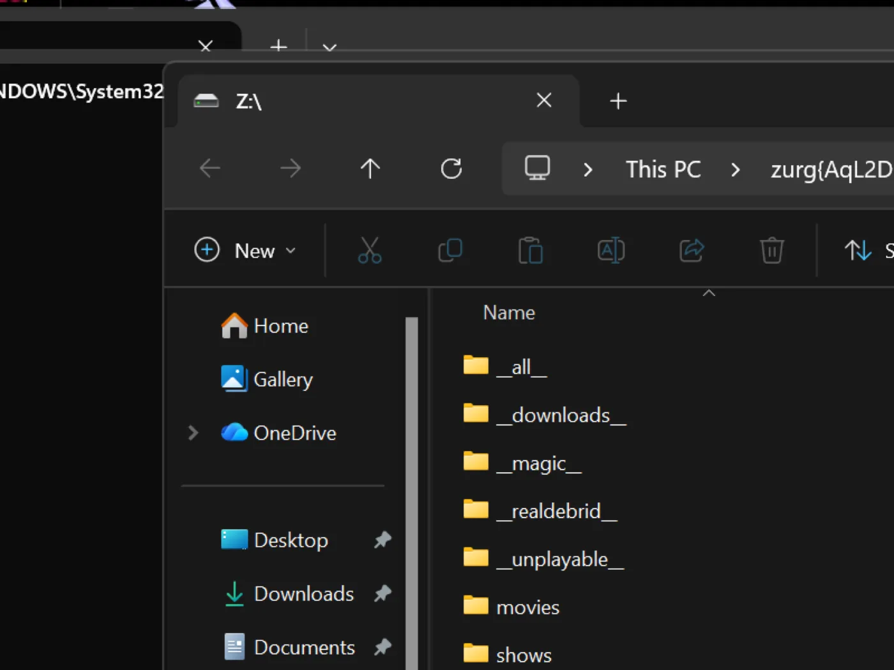
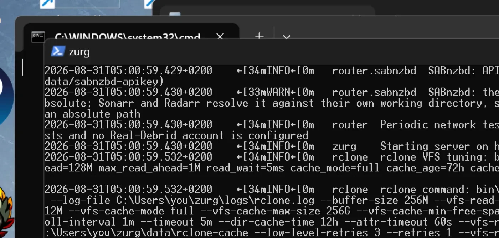

Windows, الملف التنفيذي، من الصفر
خيار سطر واحد
شغّل برنامج التثبيت الاختياري للراعي من PowerShell. يثبّت WinFsp عبر UAC، وينزّل zurg، ويشغّل أداة اختيار المزوّد والتشخيص:
irm https://raw.githubusercontent.com/debridmediamanager/zurg-site/main/public/install.ps1 | iexيعتمد على تسجيل الدخول إلى GitHub من المتصفح، ويثبّت كل شيء في $HOME\zurg. الملفات التنفيذية والإعدادات الموجودة تبقى في مكانها. تابع أدناه للطريقة اليدوية.
لا حاجة إلى Docker ولا WSL: ملف zurg التنفيذي .exe داخل مجلد، وملف config.yml تكتبه مرة واحدة، ومحرك أقراص Z: يظهر في Explorer.
تشرح هذه الصفحة العملية كلها على مرحلتين. أولاً RealDebrid مع نقطة نهاية qBittorrent، ثم إعادة ضبط كاملة وUsenet مع نقطة نهاية SABnzbd. اخترنا هذين السيناريوين لأنهما أكثر ما يقوم به الناس فعلياً، وكل واحد يختبر جانباً مختلفاً من zurg.
كل ما يلي سُجّل على تثبيت فعلي: Windows 11 Pro 23H2 (الإصدار 22631)، وPowerShell 5.1، وWinFsp 2.0.23075، وzurg 2026.08.30.0459-nightly-73-g5b4c9790، إضافة إلى حساب Real-Debrid وحساب أخبار Usenet. تم تغيير أسماء المستخدمين. مفاتيح API وأعداد المكتبة توضيحية، وكذلك أي بيانات اعتماد.
ما تحتاجه
- zurg.exe: من إصدارات الرعاة. كن راعيًا على gatekeeper لمنح حساب GitHub الخاص بك حق الوصول. تفترض هذه الصفحة أنك قد نزّلته بالفعل.
-
WinFsp: يركّب zurg المكتبة عبر rclone، وrclone يحتاج WinFsp للحصول على حرف محرك أقراص على Windows. ثبّته بصمت، أو من المثبّت:
$url = "https://github.com/winfsp/winfsp/releases/download/v2.1/winfsp-2.1.25156.msi" Invoke-WebRequest -Uri $url -OutFile "$env:TEMP\winfsp.msi" -UseBasicParsing Start-Process msiexec.exe -ArgumentList "/i", "$env:TEMP\winfsp.msi", "/qn", "/norestart" -Wait - حساب: رمز API من Real-Debrid للمرحلة الأولى، وخادم أخبار للمرحلة الثانية.
لا شيء غير ذلك. يقوم المثبّت المدمج بتنزيل rclone، وffprobe أيضًا ما لم يكن موجودًا بالفعل في PATH لديك.
موصى به: دع zurg يُكمل الإعداد
أنشئ مجلداً، وضع فيه zurg.exe، ثم شغّل المثبّت من PowerShell:
New-Item -ItemType Directory -Force "$HOME\zurg" | Out-Null
Set-Location "$HOME\zurg"
# Copy the downloaded zurg.exe here, then:
.\zurg.exe setup
.\zurg.exe doctorيسألك setup عن المزوّدين الذين تريد إعدادهم. اختر واحداً أو أكثر من Real-Debrid وTorBox وAllDebrid وUsenet وPremiumize وDebrid-Link وOffcloud، بحسب ترتيب الأولوية. يطلب بيانات الاعتماد المختارة فقط. ثم يقوم بما يلي:
- ينشئ
config.ymlويتحقق من صحته. - يقيّد صلاحيات ACL الخاصة به على مستخدمك وSYSTEM وAdministrators.
- ينزّل
bin\rclone.exe، وكذلكbin\ffprobe.exeما لم يكن ffprobe موجوداً بالفعل في PATH لديك (وفي هذه الحالة يكتبconfig.ymlالقيمةffprobe_binary: ffprobe). - يفعّل تركيب rclone على
Z:. - يسجّل
\Zurg\zurgكمهمة تسجيل دخول تفاعلية، ويشغّلها عندما يسجّل مستخدم سطح المكتب الدخول.
اختر محرك أقراص آخر غير مستخدم عند الحاجة:
.\zurg.exe setup --mount-path "Y:"يمكن تشغيل الإعداد مرة أخرى بأمان. يحدّث المهمة المولَّدة، لكنه لا يستبدل config.yml الموجود.
المهمة التفاعلية مقصودة. تنتمي تركيبات محركات WinFsp إلى جلسة تسجيل دخول Windows التي أنشأتها. تعمل خدمة Windows العادية في الجلسة 0، لذلك يكون محركها غير مرئي لـ Plex وExplorer على سطح المكتب. تم التحقق من سلوك هذا المثبّت على Windows 11 بتاريخ 4 سبتمبر 2026.
يوضح الشرح أدناه الملفات والإعدادات التي يقوم عليها المثبّت، ثم يبني إعدادات عملاء التنزيل لـ Real-Debrid وUsenet. وتفيدك وصفة التشغيل الأول اليدوي ووصفة المهمة المجدولة إذا أردت تجميع هذه الأجزاء بنفسك.
1. التشغيل الأول يدوياً: zurg يبني مجلده الخاص
PS C:\Users\you> mkdir C:\Users\you\zurg
PS C:\Users\you\zurg> .\zurg.exezurg ينشئ ملف إعدادات افتراضياً محايداً لأي مزوّد، ويخبرك بالخطوة التالية، ثم يُنهي عمله:
INFO setup Config file not found, creating default from config.simple.yml
INFO zurg Default config created at config.yml
INFO zurg Run zurg setup to choose provider(s), or add a providers block to config.yml, then rerun zurg.شغّل .\zurg.exe setup لاختيار المزوّدين وتنزيل الأدوات المساعدة. بعد الإعداد سيبدو المجلد هكذا:
C:\Users\you\zurg\
├── bin\ rclone.exe, and ffprobe.exe unless ffprobe was on your PATH
├── data\ library cache, keys, the __magic__ table
├── dump\
├── logs\ zurg.log, rclone.log
├── nzbs\ the Usenet watch directory (second pass)
├── strm\
├── config.yml
└── zurg.exeيبدأ ملف config.yml الذي يُنشأ بقائمة مزوّدين فارغة ومرشّحَي مجلدات. يملأ الإعداد القائمة حسب اختياراتك. الأمثلة اليدوية أدناه تستبدله بالإعداد الخاص بكل شرح.
2. مرحلة RealDebrid
الإعدادات
اكتب فوق config.yml بهذا المحتوى: رمز Real-Debrid، ونقطة نهاية qBittorrent مفعّلة، والتركيب على Z::
zurg: v1
providers:
- type: realdebrid
token: YOUR_RD_API_TOKEN
directories:
shows:
group: media
group_order: 10
filters:
- has_episodes: true
movies:
group: media
group_order: 20
only_show_the_biggest_file: true
ffprobe_binary: bin\ffprobe.exe # or ffprobe, if that is what setup wrote
rclone_binary: bin\rclone.exe
rclone_enabled: true
mount_path: "Z:"
rclone_extra_args:
- "--links"
magic:
enabled: true
qbittorrent:
enabled: true
api_key: "" # empty = zurg generates one and keeps it
categories: [tv-sonarr, radarr]ثلاث نقاط خاصة بويندوز هنا:
--linksاختياري، لكن يستحق الإبقاء عليه على أي حال. يقدّم zurg المكتبة كـ rclone union يجمع نصفًا محليًا ونصفًا بعيدًا، ويسأل WinFsp جذر التركيب فور ظهور القرص ما إذا كان symlink. بدون هذا الخيار يجيب rclone على هذا الاستعلام بالسجلERROR : symlinks not supported without the --links flag: /ثم يُركّب مع ذلك. القياس تم بتاريخ 2026-08-31 على zurg2026.08.31.0443-nightlyمع rclone 1.74.2 و1.75.0، وتصرّف القرص ونصفا الـ union وكتابة__magic__بالطريقة نفسها مع الخيار وبدونه. مع الخيار يسجّل الاستعلام نفسه بدلًا من ذلكNOTICE: union root '': Symlinks support enabled، وسيتعامل rclone مع الروابط الرمزية الحقيقية إن وضعتَ أيًا منها تحتdata\local. أبقِه لتبقى السجلات نظيفة.mount_path: "Z:"هنا حرف محرك أقراص وليس مسار POSIX. أي حرف حر يصلح.- أبقِ
magic.enabled: trueإن أردت يومًا أن يستورد Sonarr أو Radarr من هذا الجهاز، فالاستيراد عملية إعادة تسمية داخل__magic__، وبدونها يصبح كل استيراد تنزيلًا كاملًا. وينطبق الأمر نفسه على قسم Usenet أدناه.
شغّله واقرأ السجل
ابدأ تشغيل zurg بالطريقة البسيطة في الوقت الحالي، من نافذة PowerShell داخل المجلد:
PS C:\Users\you\zurg> .\zurg.exe --config config.ymlأول ما يفعله هو اختبار الشبكة الخاص بـ Real-Debrid. يفك قيود روابط الاختبار على كل منطقة تنزيل ويقيس زمن الاستجابة، وهذا يستغرق نحو عشرين ثانية. بعدها تظهر السطور المهمة:
INFO network_test Network test completed!
INFO zurg Provider realdebrid ready (type=realdebrid)
INFO router __magic__ serves sidecar files from data\local\__magic__
INFO router.qbittorrent qBittorrent API on /api/v2 and /qbittorrent/api/v2, save path Z:/__magic__/__all__, categories tv-sonarr, radarr
INFO router.qbittorrent qBittorrent: generated an API key in data/qbittorrent-apikey — paste it into Sonarr or Radarr's API Key field, or pin one as qbittorrent.api_key in config.yml
INFO zurg Starting server on http://[::]:9999
INFO rclone rclone started with mount Z:, union local C:\Users\you\zurg\data\localالسجل لا يطبع المفتاح نفسه أبداً. وهو موجود في data\qbittorrent-apikey. ثم تبدأ عملية مسح المكتبة. أول تشغيل يقرأ كل التورنتات في الحساب، وعلى الحساب الكبير يستغرق ذلك وقتاً. تشترك عملية المسح في ميزانية واجهة برمجة التطبيقات الخاصة بالمزوّد مع كل شيء آخر في الحساب. أثناء المسح، يرد __magic__ بـ Library is still loading. وهذا متوقع، وليس عطلاً.
تحذير واحد قد تراه، وهو معروف وغير قاتل:

لوحة التحكم
http://localhost:9999/ — حجم المكتبة يرتفع مع تقدّم عملية المسح، وكذلك حركة الطلبات المخدومة والذاكرة. Quick Links هي الواجهة كلها: Torrent Manager وConfig وDirectories وMagic وLogs.

Config هي المكان الذي تُدار فيه كل الأمور بعد التشغيل الأول. تعرض كتلة providers الحساب الوحيد:

كتلة download-client هي نفس الخيارات التي تضبطها في config.yml، ويمكنك تعديلها من هنا. كل تغيير يظهر عليه Restart Required، وهذا يعني حرفيًا أنه مطلوب: فكلا النقطتين الطرفيتين تسجّلان مساراتهما مرة واحدة فقط عند بدء التشغيل.

وأخيرًا كتلة mount، التي تُظهر حرف القرص وإدارة rclone:

محرك Z:
عندما يعمل zurg، يصبح Z: نظام ملفات بحجم بيتابايت في مستكشف الملفات:

لكن فقط إذا كان zurg يعمل في مكان يستطيع فيه مستكشف الملفات رؤيته، وهذه هي القاعدة الوحيدة في هذا الإعداد المرتبطة فعلاً بويندوز. يرتبط حرف محرك الأقراص بـجلسة تسجيل الدخول التي أنشأته. إذا شغّلت zurg من اتصال SSH أو من خدمة، فإن الربط يكون موجوداً ويعمل، لكنه يبقى غير مرئي لسطح المكتب لديك. هذا ليس خللاً في WinFsp أو rclone، بل هكذا يحدد ويندوز نطاق أحرف محركات الأقراص. يحتوي
تأكد من نقطة qBittorrent
نفس الاختبارات تعمل على أي منصة، من أي PowerShell:
PS> $KEY = Get-Content data\qbittorrent-apikey
PS> Invoke-WebRequest "http://localhost:9999/api/v2/app/webapiVersion"
# the healthy unauthenticated answer is a 403 — "the API is here, log in"
PS> Invoke-RestMethod "http://localhost:9999/api/v2/app/version" -Headers @{ Authorization = "Bearer $KEY" }
v5.0.4
PS> (Invoke-RestMethod "http://localhost:9999/api/v2/app/preferences" -Headers @{ Authorization = "Bearer $KEY" }).save_path
Z:/__magic__/__all__ثم أضف torrent إليه. ملف .torrent يُرفع باستخدام curl.exe -F (أما curl العادي في Windows PowerShell فهو في الحقيقة Invoke-WebRequest، وهو لا يملك الخيار -F)، أو أي عميل يقوم بذلك عنك:
INFO router.qbittorrent qBittorrent: added op1176 (dc98af37…) to realdebrid as W7FRRMVJWUOMSالإصدار الذي التقطه هذا التثبيت لم يكن مخزنًا مؤقتًا في الحساب، لذلك أظهرت قائمة الانتظار (بأسلوب *arr) تنزيلًا حقيقيًا. التقدم ارتفع من 2% → 10% → 50% → 75% → 99% خلال نحو ست دقائق، بالسرعة التي أبلغ عنها Real-Debrid، ثم:
INFO router.qbittorrent qBittorrent: op1176 (dc98af37…) finished on realdebridوبعد ذلك أبلغ التورنت عن الانتهاء ووجود مجلد للاستيراد منه:
"content_path": "Z:/__magic__/__all__/[NanakoRaws] One Piece S01E1176 (THK TV 1080p HEVC AAC)"قراءة الملف عبر Z: جلبت ميغابايت واحدًا في أجزاء من الألف من الثانية. التخزين المؤقت للقراءة المسبقة في VFS التابع لـ rclone يعمل أمام المزوّد، لذلك القراءات الدافئة تكون بسرعة القرص المحلي، وتتدفق المقالات في الخلفية.
أمر يستحق المعرفة: أول إصدار جربه هذا التثبيت كان اسمه …WEBRip…، وReal-Debrid يحظر بعض أسماء الإصدارات بشكل كامل. zurg يعرف هذه الأنماط ويرفض الطلب قبل أن يستهلك خانة إضافة:
WARN router.qbittorrent qBittorrent: realdebrid will not take op1176: it refuses that name outright, so the next account is triedاختر إصدارًا باسم مختلف وسيمرّ الطلب. يغطي دليل التورنت نقطة النهاية كاملةً بالتفصيل، من المهلات ووضع التخزين المؤقت فقط إلى دلالات الفشل، وإعدادات العميل فيه هي نفسها هنا، مع ملاحظتين خاصتين بنظام Windows: Host القيمة localhost عندما يعمل *arr على الجهاز نفسه، ويجب أن يعمل *arr في جلسة تسجيل الدخول نفسها التي يعمل فيها zurg حتى يرى Z:. راجع
3. إعادة الضبط
التحويل من Real-Debrid إلى Usenet يعني مسح التثبيت بالكامل: أوقف zurg، واحذف كل ما أنشأته المرحلة الأولى، واحتفظ بالملف التنفيذي وbin\ حتى لا تتكرر عمليات تحميل المساعدات.
PS> cd C:\Users\you\zurg
PS> .\zurg.exe service uninstall # removes the task setup made; or Unregister-ScheduledTask zurg for the manual one, or close the console window
PS> taskkill /IM zurg.exe /F ; taskkill /IM rclone.exe /F
PS> Get-ChildItem -Exclude zurg.exe, bin | Remove-Item -Recurse -Force
PS> Get-ChildItem
bin
zurg.exeأمر Get-ChildItem -Exclude … | Remove-Item هو إعادة الضبط كاملةً، إذ يحذف config.yml وdata\ وlogs\ وnzbs\ وكل شيء آخر. ما يبقى بعد ذلك هو بالضبط ما يحتاجه التثبيت الجديد.
4. مرحلة Usenet
الإعدادات
نفس الهيكل، لكن مع مزوّد مختلف: حساب Usenet بدل توكن debrid، ونقطة نهاية SABnzbd بدل نقطة نهاية qBittorrent:
zurg: v1
providers:
- type: nzb
nntp:
host: news.example.usenet.com
port: 563
tls: true
username: YOUR_NEWS_USERNAME
password: YOUR_NEWS_PASSWORD
connections: 8
directories:
shows:
group: media
group_order: 10
filters:
- has_episodes: true
movies:
group: media
group_order: 20
only_show_the_biggest_file: true
ffprobe_binary: bin\ffprobe.exe # or ffprobe, if that is what setup wrote
rclone_binary: bin\rclone.exe
rclone_enabled: true
mount_path: "Z:"
rclone_extra_args:
- "--links"
magic:
enabled: true
sabnzbd:
enabled: true
api_key: "" # empty = zurg generates one and keeps it
categories: [tv, movies]ثمانية اتصالات تكفي تمامًا للبث، والحد الأقصى يحدده الاشتراك نفسه في خطة الحساب.
شغّله
PS C:\Users\you\zurg> .\zurg.exe --config config.ymlالفرق مع المرة الأولى واضح من أول لحظة: لا يوجد فحص للمكتبة هنا. مكتبة NZB تبدأ فارغة، ولا يوجد شيء تجلبه من أي مكان حتى تضع فيها NZB، لذلك يكون التشغيل الأول هو اختبار الشبكة وأسطر نقاط الوصول (endpoints) والاتصال بخادم الأخبار:
INFO nzb NZB articles are kept in memory for the life of the process (nzb_segments: resident)
INFO zurg Provider nzb ready (type=nzb)
INFO router __magic__ serves sidecar files from data\local\__magic__
INFO router.sabnzbd SABnzbd API on /api and /sabnzbd/api, completed directory Z:/__magic__/__all__, categories tv, movies
INFO router.sabnzbd SABnzbd: generated an API key in data/sabnzbd-apikey — paste it into Sonarr or Radarr, or pin one as sabnzbd.api_key in config.yml
INFO zurg Starting server on http://[::]:9999
INFO rclone rclone started with mount Z:, union local C:\Users\you\zurg\data\local
INFO zurg Usenet account nzb connected: nntps://news.example.com:563 (8 connections)يتصل zurg بخادم الأخبار فور بدء التشغيل ويُبقي الاتصالات نشطة، مع TLS وكل ما يلزم. يُحفظ مفتاح SABnzbd في data\sabnzbd-apikey.

لوحة التحكم تعرض الآن مكتبة فارغة، وهذا هو الصحيح:

كتلة providers تحمل حساب الأخبار، وكتلة download-client تعرض الآن جزء SABnzbd:


أضف ملف NZB
مجلد nzbs\ هو نقطة الإدخال الوحيدة. ضع فيه ملف NZB واحدًا، تنزّله من أي فهرس، وسيلتقطه zurg:
PS> Copy-Item .\lanterns.nzb C:\Users\you\zurg\nzbs\INFO nzb Loaded NZB lanterns.nzb: 8 filesهذا هو السطر الذي يدلّ على أن ملف NZB قد قُرئ بنجاح. يظهر الإصدار كمجلد تحت __magic__\__all__ على نقطة التركيب. ولأن الناشر يسمّي ملفات إصدار Usenet كما يشاء، قد يبدو الملف داخله هكذا: J8AZfuVQCD4yPpRIF566Bv0xKoEpYa3M.mkv. مجلد الإصدار يحمل اسم ملف NZB، أما الملفات فتحمل أسماء الناشر:

لم يُنزَّل أي شيء حتى الآن، ولن يُنزَّل شيء ما لم يقرأ أحدهم ملفًا. أول قراءة للحلقة (162 MB) جلبت فقط المقالات التي تغطي النطاق المطلوب، وفكّت ترميزها yEnc، ثم أجابت. والقراءات اللاحقة كانت فورية لأن VFS قرأ مسبقًا ما حولها. ريميكس بحجم 60 GB لا يكلّفك 60 GB من المساحة في أي مكان، لا على Usenet ولا على debrid.
نقطة نهاية SABnzbd تجيب على الاستعلامات نفسها كالمعتاد:
PS> $KEY = Get-Content data\sabnzbd-apikey
PS> Invoke-RestMethod "http://localhost:9999/api?mode=version&apikey=$KEY&output=json"
{"version":"4.5.1"}
PS> (Invoke-RestMethod "http://localhost:9999/api?mode=get_config&apikey=$KEY&output=json").config.misc.complete_dir
Z:/__magic__/__all__المفتاح الخاطئ يُرفض داخل نص الرد مع HTTP 200. هكذا يتصرف SABnzbd نفسه، وzurg ينسخ هذا السلوك:
PS> Invoke-RestMethod "http://localhost:9999/api?mode=queue&apikey=wrong&output=json"
{"status":false,"error":"API Key Incorrect"}أما جانب العميل (Sonarr وRadarr والفئات والمجلدات الجذرية تحت Z:\__magic__) فشرح الخطوات بالتفصيل موجود في دليل Usenet مع Sonarr وRadarr. وكل مسار فيه يُحوَّل بالطريقة نفسها: استبدل /mnt/zurg/__magic__ بـ Z:\__magic__. ويغطي دليل Usenet حسابات الحظر، ومدة الاحتفاظ بالملفات، والإصلاح.
إبقاؤه شغالاً: قواعد الجلسة
ينشئ zurg setup المهمة التفاعلية الصحيحة تلقائياً. أدرها من مجلد zurg:
.\zurg.exe service status
.\zurg.exe service restart
.\zurg.exe service stop
.\zurg.exe service start
.\zurg.exe service uninstallالإيقاف والإعادة تطلب من zurg أن يغلق نفسه بشكل سليم أولاً، حتى تُفلت عملية rclone التابعة له محرك الأقراص. الأمر uninstall يحذف المهمة فقط، ويترك الملف التنفيذي والإعدادات والبيانات والسجلات والذاكرة المؤقتة كما هي.
الطريقة اليدوية المكافئة هي مهمة مجدولة تعمل باسمك فقط عندما تكون مسجلاً الدخول:
$wdir = "C:\Users\you\zurg"
Set-Content "$wdir\start-zurg.cmd" "@echo off`ncd /d $wdir`nzurg.exe --config config.yml"
$action = New-ScheduledTaskAction -Execute "cmd.exe" -Argument "/c $wdir\start-zurg.cmd"
$trigger = New-ScheduledTaskTrigger -Once -At (Get-Date).AddSeconds(5)
$principal = New-ScheduledTaskPrincipal -UserId $env:USERNAME -LogonType Interactive
$settings = New-ScheduledTaskSettingsSet -AllowStartIfOnBatteries -ExecutionTimeLimit ([TimeSpan]::Zero)
Register-ScheduledTask -TaskName "zurg" -Action $action -Trigger $trigger `
-Principal $principal -Settings $settings -Force
Start-ScheduledTask -TaskName "zurg"استخدام مشغّل عند تسجيل الدخول (New-ScheduledTaskTrigger -AtLogOn) بدلاً من -Once يجعل المهمة تعود بعد إعادة التشغيل. الإعداد ExecutionTimeLimit ([TimeSpan]::Zero) مهم جداً، فبدونه سيُنهي Task Scheduler المهمة بعد 72 ساعة.
فخّان جربتهما بنفسي على هذا الجهاز:
- النافذة التي تستخدم
-NoExitتعلق خانة المهمة. إذا تركت المشغّلة نافذة مفتوحة بعد توقف zurg، يعتبر المجدول المهمة ما زالت تعمل، وكلStart-ScheduledTaskلاحقة ستُرفض بالخطأ0x800710E0. شغّلStop-ScheduledTask zurgقبل بدئها من جديد، أو شغّل الملف التنفيذي مباشرة كما في الأعلى، فتنتهي المهمة مع انتهاء zurg. - الأمر
Get-PSDriveفي نافذة واحدة لا ينفي التركيب. القرص يظهر للعمليات الموجودة في جلسة تسجيل الدخول نفسها، أي تطبيقات سطح مكتبك، وليس لكل نافذة PowerShell تفتحها. إذا اختفىZ:في نافذة ما، تحقق من مصدر جلسة تلك النافذة قبل أن تستنتج أن التركيب توقف.
إذا لم تكن بحاجة إلى مستكشف الملفات أبداً، كأن يكون الجهاز بلا شاشة أو كانت العملاء تتكلم HTTP، فلا تهمك هذه الأمور كلها: شغّل zurg كما تريد ووجّه التطبيقات إلى http://localhost:9999/dav/ أو إلى نقاط النهاية. قاعدة الجلسة تنطبق فقط على حرف محرك الأقراص.
الوصول إلى zurg من جهاز آخر
يصل البرامج على هذا الكمبيوتر إلى zurg عبر localhost. يمنع جدار حماية Windows كل شيء آخر على شبكتك من الدخول حتى تسمح له بذلك. بالنسبة إلى Sonarr وRadarr وخادم الوسائط أو متصفح على جهاز آخر، شغّل هذا الأمر مرة واحدة في PowerShell كمسؤول (إذا كان لديك رقم port: آخر في config.yml، فاستخدم هذا الرقم):
New-NetFirewallRule -DisplayName zurg -Protocol TCP -LocalPort 9999ثم يستخدم الجهاز الآخر عنوان IPv4 لهذا الكمبيوتر، الذي يعرضه الأمر ipconfig، بدلاً من localhost.
إذا لم يصل الجهاز الآخر إلى رد، فابحث عن قاعدة تحظر zurg. الضغط على Cancel في نافذة Windows التي تطلب السماح لـ zurg.exe ينشئ قاعدة كهذه، وقاعدة الحظر تتغلب على القاعدة أعلاه. يزيل الأمر التالي هذه القواعد الخاصة بـ zurg.exe في $HOME\zurg، وشغّله أيضاً كمسؤول (غيّر المسار إذا كان zurg موجوداً في مكان آخر):
Get-NetFirewallApplicationFilter -Program "$HOME\zurg\zurg.exe" | Get-NetFirewallRule | Where-Object Action -eq Block | Remove-NetFirewallRuleإبقاء الذاكرة المؤقتة صغيرة
يحفظ الـ mount كل ملف يشغّله، كاملاً، في data\rclone-cache داخل مجلد zurg (وفي $HOME\zurg\data\rclone-cache إذا استخدمت التثبيت بسطر واحد). ويحتفظ بهذه الملفات بعد انتهاء التشغيل، وينمو حتى 256G افتراضياً.
لا تعتمد على حد العمر 72h لتنظيفه. فالمهام المجدولة في Plex تقرأ الملفات المخزنة كل ليلة، وهذا يعيد ضبط عمرها، فلا تنتهي صلاحيتها أبداً. حد الحجم هو الحد الفعلي الذي يصمد.
لاستخدام مساحة أقل على القرص، خفّض الحد في config.yml. فـ rclone_extra_args قائمة واحدة، لذا أضف السطور الجديدة تحت --links الموجود لديك بدلاً من كتابة rclone_extra_args: ثانية:
rclone_extra_args:
- "--links"
- "--vfs-cache-max-size"
- "50G"
- "--vfs-cache-min-free-space"
- "20G"--vfs-cache-min-free-space يجعل rclone يتوقف عن التخزين المؤقت عندما تقترب المساحة الحرة على القرص من هذا الحد. ثم أعد تشغيل zurg:
.\zurg.exe service restartيقلّص rclone ذاكرة التخزين المؤقت إلى الحد الجديد بعد إعادة التشغيل. لتفريغها فوراً، أوقف zurg أولاً:
.\zurg.exe service stop
Remove-Item -Recurse -Force .\data\rclone-cache\vfs\*, .\data\rclone-cache\vfsMeta\* -ErrorAction SilentlyContinue
.\zurg.exe service startلمعرفة المساحة الفعلية التي تأخذها، افتح Properties لمجلد rclone-cache واقرأ Size on disk. فالملفات المحمّلة جزئياً تكون متفرقة (sparse)، لذا يُظهر Size مساحة أكبر بكثير مما يشغله القرص فعلياً.
لمزيد من التفاصيل راجع المساحة التي يستخدمها الـ mount.
تحديث zurg
cd $HOME\zurg
.\zurg.exe update
.\zurg.exe service restartيحدّث نفسه بنفسه بناءً على رعاة المشروع: الأمر update يجلب أحدث بناء ليلي، ويتحقق من أن الملف المُنزَّل هو النسخة المتوقعة قبل أن يستبدل أي شيء، ثم ينقل zurg.exe الذي يعمل حاليًا جانبًا حتى يتمكن ويندوز من تثبيت الجديد. إذا كان البناء المثبَّت هو الأحدث بالفعل، فإنه يُخبرك بذلك ولا يغيّر شيئًا. وإعادة التشغيل تُشغّل البناء الجديد.
على بناء قديم جدًا لا يحتوي على هذا الأمر، يقوم المثبِّت بالمهمة نفسها:
$env:ZURG_INSTALL_MODE = "update"; irm https://raw.githubusercontent.com/debridmediamanager/zurg-site/main/public/install.ps1 | iexاستكشاف الأخطاء وإصلاحها
ما زلت عالقاً؟ اسأل في منتدى zurg-support على Discord. يوضّح طلب المساعدة ما يجب ذكره.
PowerShell عبر SSH، لمن يفكر بالتحكم عن بُعد
يُفسّر PowerShell على ويندوز بعض عادات POSIX تفسيراً خاطئاً، وSSH يأكل علامات الاقتباس. && ليست فاصلاً للأوامر، و2>/dev/null ليست إعادة توجيه، و$_.Property داخل -Command مضمّن تصل مشوّهة. لأي شيء غير بسيط، ضعه في ملف .ps1، وانسخه إلى الجهاز، وشغّل powershell -ExecutionPolicy Bypass -File C:\path\script.ps1. هكذا شُغّل كل الإعداد الموجود في هذه الصفحة بالضبط.
انظر أيضًا
- Linux، Docker وmacOS — نفس التثبيت على المنصات الأخرى
- Sonarr و Radarr للتورنتات — نقطة نهاية qBittorrent من البداية إلى النهاية، مع إعدادات العميل
- Sonarr و Radarr — نقطة نهاية SABnzbd، بنفس الطريقة
- Usenet — حسابات الأخبار، ومدة الاحتفاظ، والإصلاح، وواجهة
nzbالخلفية بالتفصيل __magic__— المجلد الذي تستورد منه نقطتا النهاية الاثنتان